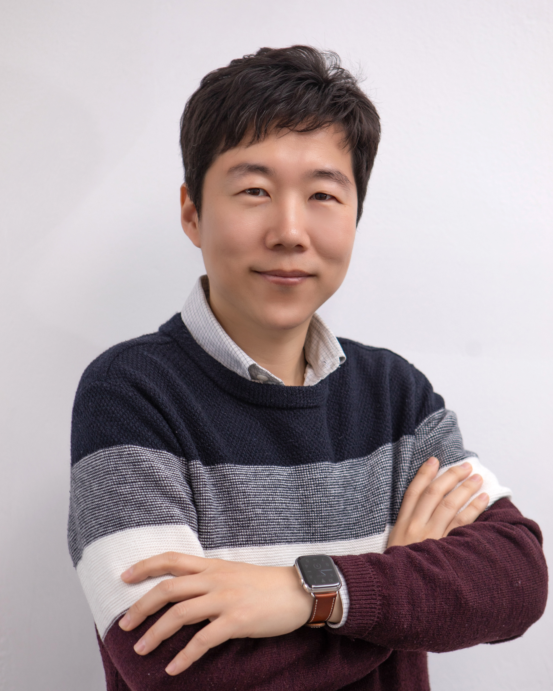

Jeongho Kwak, Ph.D.
Associate Professor @ Department of Computer Science and Engineering, College of Informatics, Korea University, South Korea

Email: jeonghokwak@korea.ac.kr
Tel. (+82)02-3290-3971
[CV] | [Google Scholar] | [LinkedIn] | [Calendar]
No. 406, Woojung Hall of Informatics, Korea University, 145 Anam-ro, Seongbuk-gu, Seoul, South Korea
Jeongho Kwak is currently an Associate Professor at Department of Computer Science and Engineering, Korea University, Seoul, Korea. He is leading the Intelligent Computing & Networking Laboratory (ICNL) at Korea University. His research interests lie on compute/storage/network resource allocation in cloud computing and 5G network architecture with optimization and learning tools. He received the Master Degree and Ph.D. degree in electrical engineering from KAIST, Daejeon, Korea, in Feb. 2011 and Feb. 2015, respectively. He received the Bachelor degree (Summa Cum Laude) in electrical engineering from Ajou University, Suwon, Korea in Aug. 2008.
Adjunct Professor, School of Smart Mobility, Korea University, Seoul, South Korea, 2025.09-now
Associate Professor, CSE, Korea University, Seoul, South Korea, 2025.03-now
Associate Professor, EECS, AI, DGIST, Daegu, South Korea, 2023.03-2025.02
Assistant Professor, EECS, AI, DGIST, Daegu, South Korea, 2020.02-2023.02
Assistant Professor, EE, Daegu University, Gyeongsan, South Korea, 2019.03-2020.01
Marie-Curie Fellow, Trinity College Dublin, Dublin, Ireland, 2017.07-2019.02
Postdoctoral Researcher, INRS & Western University, Montreal, Canada, 2015.10-2017.06
Postdoctoral Researcher, KAIST, South Korea, 2015.03-2015.09
해동우수논문상 (Pildo Yoon), 한국통신학회 하계종합학술발표회 (As advisor), 한국통신학회, Jun. 2023.
Bronze Prize (Pyeongjun Choi, Dongho Ham, Jinhwi Kim), 28th SAMSUNG HumanTech Paper Award (As advisor), Samsung Electronics Corp., Feb. 2022.
Contribution Award (공로상), KICS (한국통신학회) Nov. 2021.
Bronze Prize (Pyeongjun Choi), 27th SAMSUNG HumanTech Paper Award (As advisor), Samsung Electronics Corp., Feb. 2021.
Marie Sklodowska-Curie Research Fellowship, European Commission, Apr. 2017 [Link].
Gold Prize, 23rd SAMSUNG HumanTech Paper Award, Samsung Electronics Corp., Feb. 2017.
Silver Prize, 22nd SAMSUNG HumanTech Paper Award, Samsung Electronics Corp., Feb. 2016.
Gold Prize, 21st SAMSUNG HumanTech Paper Award, Samsung Electronics Corp., Feb. 2015 [NEWS].
Silver Prize, 20th SAMSUNG HumanTech Paper Award, Samsung Electronics Corp., Feb. 2014.
Bronze Prize, 19th SAMSUNG HumanTech Paper Award, Samsung Electronics Corp., Feb. 2013.
2nd Qualcomm Innovation Award, Qualcomm Corp., Mar. 2016.
1st Qualcomm Innovation Award, Qualcomm Corp., Mar. 2015.
Best Paper Award, KAIST-LG Electronics 5G Paper Award, LG Electronics Corp., Dec. 2014.
Annual Honor Roll Award, Excellent 3rd-year Doctoral Student in Research Performance Evaluation, KAIST, May 2014.
Annual Honor Roll Award, Excellent 2nd-year Doctoral Student in Research Performance Evaluation, KAIST, June 2013.
Membership: Member of IEEE
Membership: Member of ACM
Technical Program Track Chair, IEEE CCNC, Las Vegas, Korea, 2025.
Organizing Committee, EDAS Chair, WiOpt, Seoul, Korea, 2024.
Organizing Committee, Poster Co-Chair, IEEE CCNC, Las Vegas, US, 2024.
Technical Program Committee (TPC), WiOpt, Singapore, 2023.
Technical Program Committee (TPC), IEEE ICC, Rome, Italy, 2023.
Technical Program Committee (TPC), WiOpt, Turin, Italy, 2022.
TPC Vice Chair for Information Systems, ICTC, Jeju, Korea, 2022.
Organizing Committee, Poster Co-Chair, IEEE CCNC, Las Vegas, US, 2023.
Organizing Committee, Web Chair, ACM MobiHoc, Korea, 2022.
Organizing Committee, Poster Co-Chair, ICOIN, Jeju, Korea, 2022.
Organizing Committee, EDAS Chair, ICTC, Jeju, Korea, 2021.
Technical Program Committee (TPC), IEEE GLOBECOM, Madrid, Spain, 2021.
Technical Program Committee (TPC), JCCI, Busan, Korea, 2021.
Organizing Committee, Web Chair, IEEE ISORC, Daegu, Korea, 2021.
Organizing Committee, Publication Chair, ICOIN, Jeju, Korea, 2021.
Organizing Committee, EDAS Chair, ICTC, Jeju, Korea, 2020.
Technical Program Committee (TPC), CCDWN 2020 in conjunction with WiOpt, Volos, Greece, 2020.
Organizing Committee, Publicity Chair, IEEE WCNC, Seoul, Korea, 2020.
Technical Program Committee (TPC), ICCCS 2019, Daegu, Korea, 2019.
Technical Program Committee (TPC), IEEE PIMRC, Bologna, Italy, 2018.
Technical Program Committee (TPC), IEEE GreenCom, Halifax, Canada, 2018.
Technical Program Committee (TPC), IEEE JSAC Special issue on Caching for Communication Systems and Networks, 2017.
Technical Program Committee (TPC), WiOpt 2018, Workshop on Edge and Fog Computing for Intelligent IoT Applications.
Technical Program Committee (TPC), IEEE VTC-Fall, Montréal, QC, Canada, 2016.
Journal Reviewer: IEEE/ACM Transactions on Networking, IEEE Transactions on Mobile Computing, IEEE Journal on Selected Areas in Communications, IEEE Transactions on Communications, IEEE Transactions on Wireless Communications, IEEE Internet of Things Journal, IEEE Transactions on Vehicular Technology, IEEE Communications Magazine, IEEE Transactions on Network and Service Management, Sensors.
Conference Reviewer: IEEE ISIT 2016, ACM MobiHoc 2016, 2018, IEEE PIMRC 2016, IEEE INFOCOM 2017, IEEE INFOCOM 2018, IEEE INFOCOM 2019, IEEE INFOCOM 2020.
"Learning and Resource Co-Optimization in Mobile Vision Applications," Tutorial Session, Sejong, Korea, APNOMS 2023 (2023.09.06)
"Mobile AI: Cloud/Edge Code Offloading, Service Caching, and Learning Model Optimization," 정보 및 학습이론 단기강좌, KICS, Online, 2023.08.02.
"TWIST: Dynamic Interplay Between Service Caching and Code Offloading in Mobile-Edge-Cloud Networks," POSTECH, Pohang, 2023.07.19.
"Lyapunov Optimization and its Applications to Network Systems," 단기강좌, 아주대학교, Suwon, 2023.05.31.
"Mobile AI: Learning and Resource Co-Optimization for Mobile Vision Applications," 제4회 미래통신네트워크 워크샵, 한경대학교, Anseong, 2022.07.07.
"모바일 AI: 학습모델과 모바일 자원의 동적 최적화," KCC 2022, 정보통신소사이어티 워크샵, Jeju, 2021.06.29.
"모바일AI: 효율적인 학습모델과 자원관리," AI Frontiers Summit, Seoul, 2022.05.25.
"VisionScaling: 모바일 인공지능을 위한 효율적 학습모델과 자원관리," 제15회 미래통신기술워크숍, KICS, Online, 2022.05.13.
"Deep Reinforcement Learning: Theory and Applications to Network Systems ," Inha University, AI Workshop, Online, 2021.04.13.
"Lyapunov Optimization and Reinforcement Learning in Network Systems," KICS AI & Comm./Network Workshop, Online, 2021.02.25.
"Deep Reinforcement Learning: Theory and Applications," Lecture on Reinforcement Learning: Basics and Applications, KICS RL Workshop, Online, 2021.01.26.
"Reinforcement Learning vs. Optimization: Applications to Contents Caching Networks," KICS Summer Conference, 2020.08.13.
"Contents Caching Networks: Optimization versus Reinforcement Learning," DGIST-GIST AI-Workshop, Online Conference, 2020.08.11.
"Contents Caching Networks: Optimization versus Reinforcement Learning," KRNet, Online Conference, 2020.06.23.
"Contents Caching Networks: Optimization versus Reinforcement Learning," Konkuk University, Seoul, South Korea, 2020.06.16.
"Towards Intelligent Management of Multiple Resources in Cloud/Edge Computing Architecture," ICE, DGIST, Daegu, South Korea, 2019.12.09.
"Optimization Techniques for Cloud Computing," Kookmin University, Seoul, South Korea, 2019.11.16.
"Cloud Computing & IoT Systems," Daegu Catholic University, Gyeongsan, South Korea, 2019.08.29.
"Lyapunov Optimization and its Applications to Network Systems," Lecture on Mobile and Wireless Communications, KICS, Soongsil University, Seoul, South Korea, 2019.08.22.
"Lyapunov Optimization Framework: Overview and Applications," Gyeongsang National University, Tongyoung, South Korea, 2019.01.23.
"Network Utility Maximization and Lyapunov Optimization Framework: Overview and Applications," UNIST, Ulsan, South Korea, 2019.01.18.
Prof. Yeongjin Kim, Inha University, VisionScaling, Integrated Service Chaining Optimization
Prof. George Iosifidis, Trinity College Dublin, Ireland, Elastic Contents Caching, Collaboration of MNO and CSP
Prof. Kyunghan Lee, Seoul National University, Collaboration of MNO and CSP, Edge Service Caching
Prof. Long Bao Le, INRS, Canada, Collaboration of MNO and CSP
Dr. Georgios Paschos, Amazon Web Service, Luxembrug, Elastic Content Caching
Prof. Joohyun Lee, Hanyang University, Code offloading using Reinforcement Learning
{kind=link}